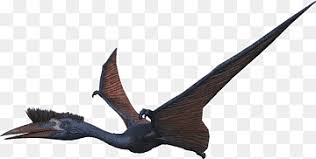

Quetzalcoatlus, llamado así por la deidad azteca Quetzalcóatl, la serpiente emplumada, es un género extinto de pterosaurios pterodactiloideos del Cretácico superior en Norteamérica (Maastrichtiense, hace cerca de 68-66 millones de años), y uno de los mayores animales voladores conocidos de todos los tiempos. Era un miembro de los azdárquidos, una familia de avanzados pterosaurios sin dientes con cuellos rígidos e inusualmente largos.
DESCRIPCIÓN
Material craneal (de una especie menor aún innombrada) muestra que Quetzalcoatlus tenía un pico muy agudo y afilado, contrariamente a las primeras reconstrucciones que mostraban un hocico romo, basadas en la inadvertida inclusión de material de la mandíbula de otra especie de pterosaurio, posiblemente de un tapejárido o de una forma relacionada con Tupuxuara. Una cresta craneal estaba presente pero su forma y tamaño exactos son aún desconocidos.2
| |
|
|
| |
|
|